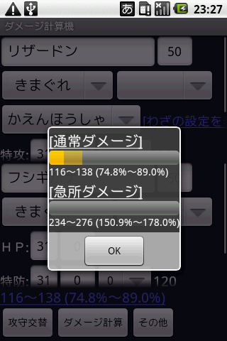

ポケモン・わざ・特性・アイテムなどを指定してダメージの計算を行うことが出来ます。各項目を入力後、画面下部にある「ダメージ計算」ボタンをクリック(タップ)してください。また「攻守交替」ボタンをクリックすることで攻撃側と防御側のポケモンの入れ替えが可能です。※計算結果にミスがある可能性があることをご了承ください。
ダブルバトル・トリプルバトル時の複数攻撃時のダメージはシングルではなくダブルを指定してください。
攻撃ポケモンは名前を部分一致で絞り込みます。ひらがな・カタカナで動作します。
タイプ(の上書き)はポケモン本来のタイプを指定したタイプで上書きします(みずびたしやアルセウスのプレートなどで使ってください)。
わざの威力・タイプ・分類はデフォルトでは隠れていますので「わざの設定を表示」をクリックしてください。
ちからのハチマキやものしりメガネなどが該当します。
各種プレートやドラゴン珠などが該当します。
各種ジュエルが該当します。
効果抜群のときダメージを1.2倍します。
ダメージを1.3倍します。
こだわりハチマキ・こだわりメガネのことで、ダメージを1.5倍します。
カラカラ/ガラガラ専用アイテムです。こうげきを2倍します。
ピカチュウ専用アイテムです。わざの威力を2倍します。
パールル専用アイテムです。とくこうを2倍します。
ラティオス/ラティアス専用アイテムです。とくこうを1.5倍します。
異性の場合のとうそうしんが該当します。
すてみやてつのこぶしなどが該当します。
同性の場合のとうそうしんが該当します。
ちからずくやすなのちからなどが該当します。
テクニシャンやげきりゅうなどが該当します。
こうげきを1.5倍します。
タイプ一致補正を1.5倍の代わりに2倍にします。
こうげきを2倍します。
効果いまひとつの時ダメージを2倍します(1/2倍->1倍・1/4倍->1/2倍)。
天候が晴れのときとくこうを1.5倍します。
とくこうを1.5倍します。
急所のダメージを1.5倍します(つまり通常ダメージの3倍です)。
こうげきを1/2倍します。
こうげき/とくこうを1/2倍します。
攻撃ポケモンは名前を部分一致で絞り込みます。ひらがな・カタカナで動作します。
タイプ(の上書き)はポケモン本来のタイプを指定したタイプで上書きします(みずびたしやアルセウスのプレートなどで使ってください)。
効果抜群のときダメージを1/2倍します。
ノーマルタイプの攻撃のダメージを1/2倍します。
タイプによって無効化する攻撃を無効化しません。
最終進化系ではないポケモンのとき、ぼうぎょ/とくぼうを1.5倍します。
メタモン専用アイテムです。ぼうぎょを2倍します。
パールル専用アイテムです。とくぼうを2倍します。
ラティオス/ラティアス専用アイテムです。とくぼうを1.5倍します。
ほのおタイプの攻撃のダメージを1/2倍します。
ほのお/こおりタイプの攻撃のダメージを1/2倍します。
ほのおタイプのわざの威力を1.25倍します。
効果抜群のときダメージを3/4倍します。
ぼうぎょを1.5倍します。
ダメージを1/2倍します。
ダメージタイプが「シングル」のときダメージを1/2倍します。ダメージタイプが「ダブル」のときダメージを2/3倍します。半減壁(ダブル)も同時に選択されていた場合、半減壁(ダブル)が優先されます。
ダメージタイプが「シングル」でも「ダブル」でもダメージを2/3倍します。
こうげきを1/2倍します。
わざの威力を1.5倍します。
ダメージを1.5倍します。
ほのおタイプの攻撃のダメージを1.5倍します。
天候が晴れのときこうげきを1.5倍します。
天候が晴れのときとくぼうが1.5倍します。
ダメージを3/4倍します。
あくタイプのポケモンにエスパータイプのわざでダメージを与えられます。
ゴーストタイプのポケモンにノーマル/かくとうタイプのわざでダメージを与えられます。
ひこうタイプのポケモンにじめんタイプのわざでダメージを与えられます。
ひこうタイプの補正を計算に含めません(ひこうタイプはないものとして扱われる)。
各天候を選択したときの効果です。
「ダメージ計算」ボタンをクリックすることで計算結果を確認できます。また計算結果をクリックすることで、急所ダメージ及び各乱数の場合のダメージも一覧で確認することが出来ます。
メニューから攻撃側/防御側の表示・非表示、他画面への切り替え、ヘルプが行えます。